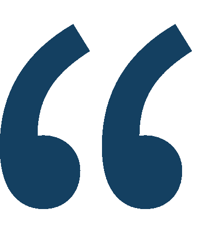
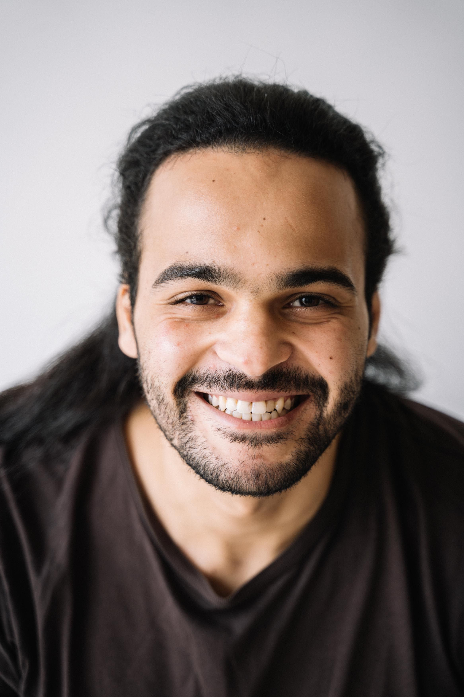
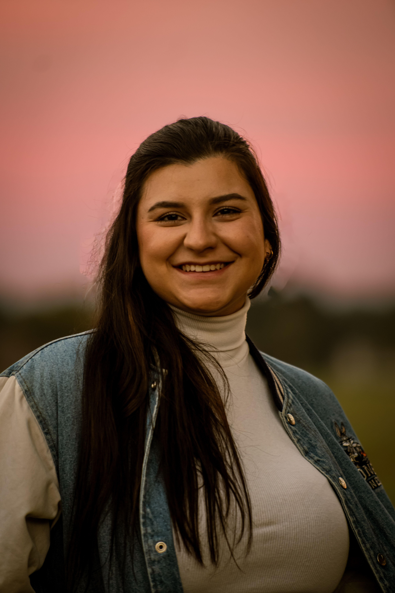
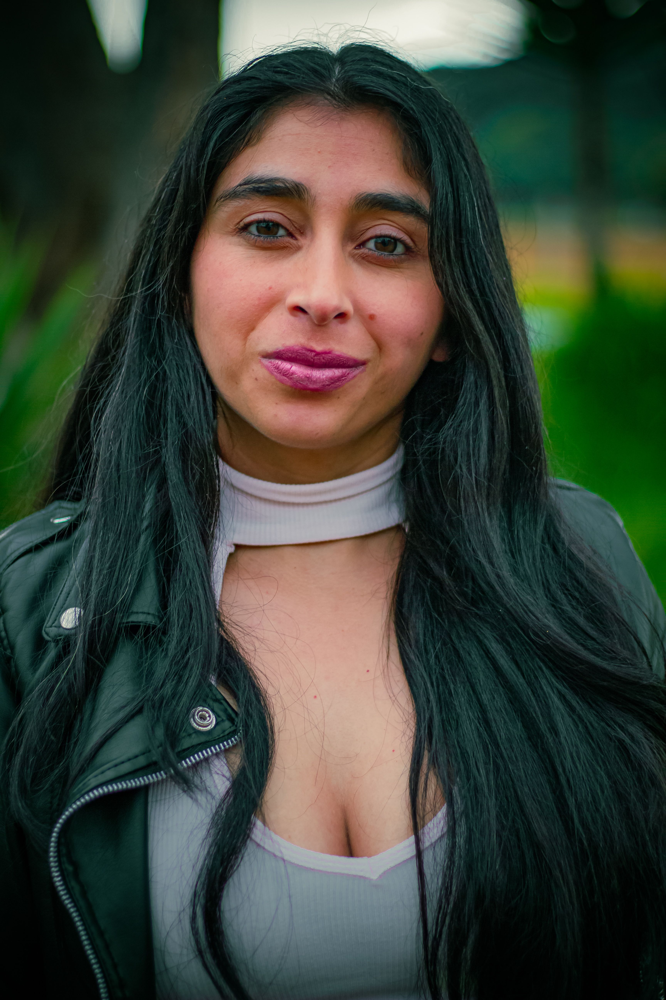
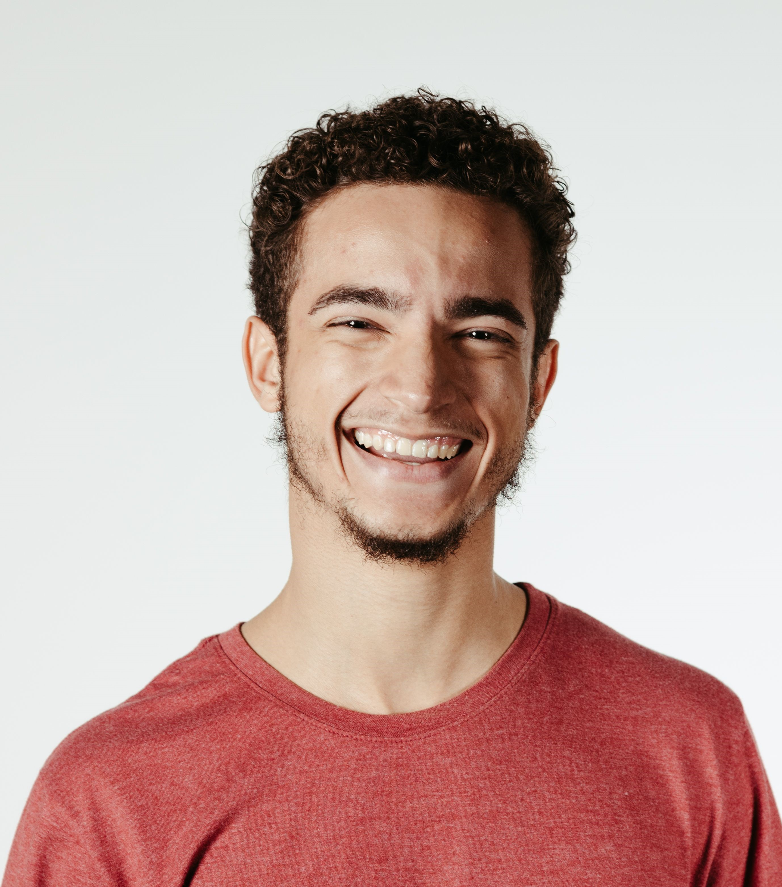
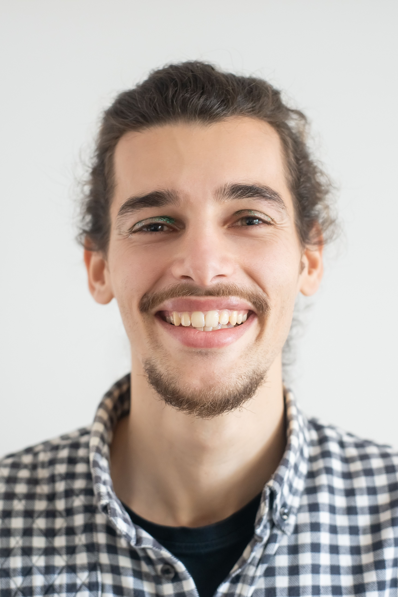

Nuestra Historia
Cuadernos Llenos nació en 2018 a partir de una pregunta sencilla, pero profundamente incómoda: ¿cuántos chicos dejan de aprender no por falta de capacidad, sino por falta de oportunidades?
Todo comenzó cuando un pequeño grupo de estudiantes, docentes, profesionales y vecinos del Conurbano Bonaerense empezó a encontrarse con una realidad repetida en distintos barrios: niños y adolescentes con ganas de aprender, pero sin un espacio tranquilo para estudiar, sin alguien que pudiera ayudarlos con una tarea o explicarles un tema que no habían comprendido en clase.
Muchos de ellos compartían una misma dificultad: en sus hogares no siempre había internet, materiales escolares, tiempo de acompañamiento o condiciones adecuadas para sostener el estudio. Con el tiempo, esas pequeñas dificultades se transformaban en rezago escolar, frustración y, en muchos casos, abandono. Frente a esa realidad, decidimos actuar.
Lo que comenzó de manera sencilla —una mesa prestada, algunos cuadernos, mates compartidos y voluntarios ayudando después del trabajo o de la facultad— fue creciendo poco a poco. Las primeras jornadas de apoyo escolar demostraron algo importante: cuando un estudiante encuentra acompañamiento, confianza y un lugar donde sentirse capaz, el aprendizaje vuelve a ser posible.
Así surgió Cuadernos Llenos, con una convicción clara: ningún niño debería quedar atrás por el lugar donde nació o por las dificultades de su contexto.
Desde entonces, trabajamos para construir espacios gratuitos de apoyo escolar en distintos puntos del Gran Buenos Aires, donde chicos y adolescentes puedan hacer tareas, preparar exámenes, fortalecer hábitos de estudio y recuperar la confianza en sí mismos. Pero también buscamos algo más profundo: crear comunidad.
Nuestra convicción
Creemos que la educación no se construye solamente dentro de una escuela. Se construye cuando un vecino abre un espacio, cuando un voluntario dona tiempo, cuando alguien comparte conocimiento, cuando una comunidad decide acompañar.
Hoy, seguimos creciendo con el mismo espíritu con el que empezamos: transformar hojas vacías en oportunidades, dudas en confianza y trayectorias escolares en futuros posibles.
Porque detrás de cada cuaderno lleno, hay una historia que todavía puede escribirse.
MISIÓN
Brindar espacios gratuitos de apoyo escolar y acompañamiento educativo a niños y adolescentes de contextos vulnerables, fortaleciendo sus aprendizajes, hábitos de estudio y permanencia en el sistema educativo a través del compromiso comunitario, el voluntariado y el acceso a oportunidades educativas más equitativas.
VISIÓN
Construir una comunidad donde ningún niño o adolescente vea limitado su futuro por desigualdades educativas, económicas o sociales; una red solidaria en la que cada estudiante tenga acceso a apoyo, contención y oportunidades reales para desarrollar su potencial y completar su trayectoria educativa.
VALORES
- Compromiso
- Empatía
- Inclusión
- Comunidad
- Solidaridad
- Perseverancia
- Transparencia
- Igualdad de oportunidades

A veces lo que cambia una trayectoria escolar no es una gran estructura, sino algo mucho más simple: un lugar para estudiar, alguien que escuche y una comunidad que acompañe.
NUESTRO EQUIPO

Rosa Alvarez
Fundadora y Directora General

Evangelina Pati
Coordinadora Operativa

Mariano Acosta
Coordinador Pedagógico
Nicolás Peralta
Coordinador de Voluntarios

Claudia Gutierrez
Referente Territorial

Andrea Molina
Coordinadora de Comunicación

Federico Luna
Responsable de Alianzas y Donaciones

Juan Manuel Lopez
Responsable Administrativo y de Impacto